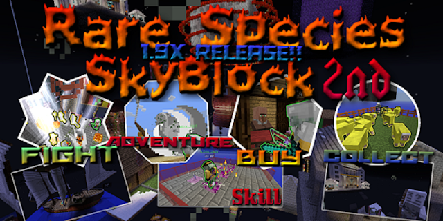
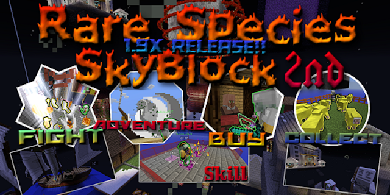

動画
Rare Species SkyBlockの最初にすることを動画でまとめました！初心者の方や初めてプレイする方は是非動画を見てください！
動画→Rare Species SkyBlock 最初にすること
Rare Species SkyBlockとは？島の数が膨大で、EXダンジョンなどスカイブロックという枠を超えて色々なモノがつめ込まれているMAPです。プレイヤーは特殊能力が使え様々な魔法で攻撃ができます。一部の敵は通常ではしてこない攻撃をしてきます。
Rare Species SkyBlockの最初にすることを動画でまとめました！初心者の方や初めてプレイする方は是非動画を見てください！
動画→Rare Species SkyBlock 最初にすること
Rare Species SkyBlockとは？島の数が膨大で、EXダンジョンなどスカイブロックという枠を超えて色々なモノがつめ込まれているMAPです。プレイヤーは特殊能力が使え様々な魔法で攻撃ができます。一部の敵は通常ではしてこない攻撃をしてきます。
すべての島を攻略する
エンドに行き帰還ゲートを開放してエンディングをみる
マルチで遊ぶ際の注意server.propertiesの中にあるenable-command-block=trueにしてください。eula.txtの中にあるeula=falseをeula=trueにしてください。その他のマルチプレイに関することはwikiをご参照ください。
1.16.2